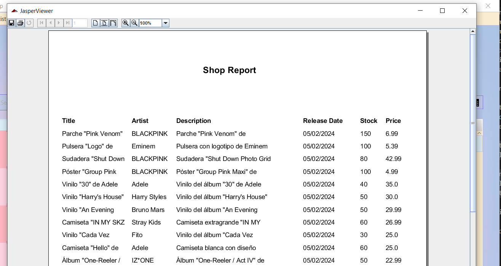

Esta ventana permite a los clientes realizar operaciones básicas en la tienda de productos de Fanetix. Los clientes podrán añadir productos al carrito y filtrar los productos disponibles.Así mismo podrá generar un informe que contiene un listado de todos los productos de la aplicacion.
Para añadir un producto al carrito, podrá hacerlo de 2 maneras: con el botón Add to Cart o dando click derecho en el producto dentro de la tabla y seleccionando la opción con el mismo nombre en el menú de contexto.
Si el producto no tiene stock, aparecerá una alerta advirtiendo que no puede añadirlo al carrito. En caso de que tenga stock, aparecerá una ventana preguntando al usuario la cantidad de ese producto que quiere añadir a su carrito. Si no se produce ningún error, el producto se añadirá al carrito.
Imprimir listado de productosPulsando el botón Print disponible al dar click derecho se abrirá una ventana donde
se verá un documento que contiene un listado de los productos que existen en la aplicación:

Mediante los botones de la parte superior de la ventana podrá imprimir o almacenar dicho informe.
Podrá filtrar los productos de diferentes maneras:
Pulsando el botón x se cerrará la aplicación.
AyudaPulsando el botón de ayuda verá este documento de ayuda.